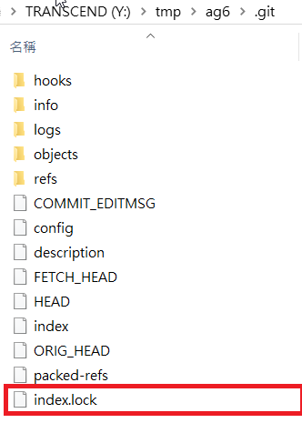

差異比對 << Previous Next >> 可攜程式懶人包
差異比對 << Previous Next >> 可攜程式懶人包
導入ungit
1.下載 kmol_2019.7z, 接著再下載 nodejs_with_ungit.7z ：
圖片來源：點此觀看
2.將 nodejs 放入 kmol_2019 的 data 目錄中：
3.設定啟動 start.bat 中的 ungit 命列列搜尋路徑(start_cadlab.bat同樣)：
路徑指令：set path8=%Disk%:\nodejs;%Disk%:\nodejs\appdata\roaming\npm;

*此在"SciTE"程式編撰
4.將 path8 納入 path 設定：
5.設定 USERPROFILE 環境變數
路徑指令：set USERPROFILE=%Disk%:\home
6.關閉重啟查看是否ungit指令可否使用：
導入影片：https://www.youtube.com/watch?v=lB-spECfhr8
詳細步驟網頁：https://2019wcm.blogspot.com/2019/03/ungit.html
-------------------------------------------------------------------------------------------------------------
*首推時發現錯誤bug，問題如下：
查詢錯誤後發現是有一個檔案名叫"index.lock"去擋到上學期所學的版本推法。
2019.03.11解決辦法：
移除"Y:\tmp\ag6\.git"內的

但不知道此阻擋的檔案是否是為了讓我們利用ungit去推送、編輯網頁，此有待下次上課詢問老師，但當下解決辦法便為移除此檔。
參考網址：請點此
差異比對 << Previous Next >> 可攜程式懶人包